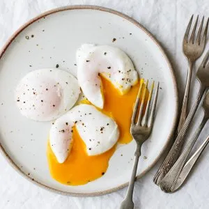

Perfectly Poached Egg

A perfectly poached egg is certainly a small art in itself. With a few tricks, tricks and practice, however, certainly no witchcraft. If you follow a few guidelines, you will quickly find that you have avoided preparing this delicacy for far too long and thus missed a lot.
Preperation
For the egg
- Water
- White wine vinegar
- Salt
- Eggs, cold
- Directly from the refrigerator
Accessories
- Pot in which about 10 cm of whater can be stored
- Foam towel
- Foam/strainer spoon
- Vortex/swirl
Poached egg: step by step
-
First put the water with the vinegar in a pot and boil it.
Once the water boils, reduce the temperature until the water no longer bubbles or bubbles. So just before the boiling point.
-
Then carefully beat the egg into a small cup.
Be careful not to hurt the yolk.
-
Stir a vortex into the water and then let the egg gently slide into the middle of the vortex and cook for 5 minutes.
-
Skim off with your ladle, drain and then drain the trowel briefly on a kitchen roll.
Salt, serve and serve.
Tip:
For example, freshly baked sourdough bread with a little butter and chives goes well with it!